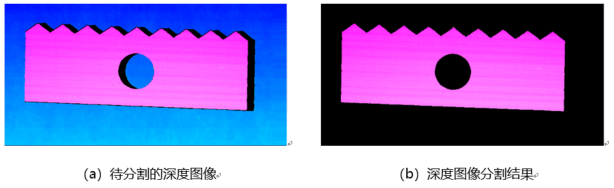
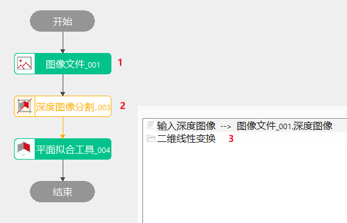
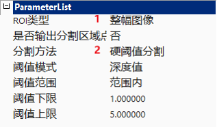
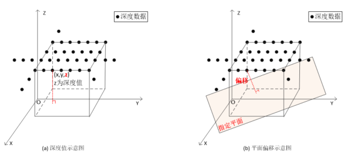
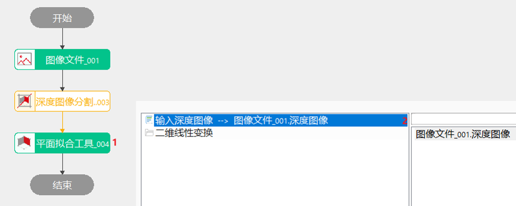

Công cụ phân đoạn hình ảnh chiều sâu chủ yếu là phân đoạn thông tin chiều sâu trong vùng quan tâm của hình ảnh chiều sâu. Hình 1 cho thấy việc phân đoạn vật thể trong hình ảnh chiều sâu ra khỏi nền.

Công cụ phân đoạn hình ảnh chiều sâu trong dự án 3D, ví dụ như phát hiện độ phẳng, phát hiện điểm hàn, dùng để trích xuất mục tiêu (như chọn ROI và ngưỡng, trích xuất phần điểm hàn hình tròn) hoặc tiền xử lý (loại bỏ phần không cần thiết).
Công cụ phân đoạn hình ảnh chiều sâu dựa theo vùng quan tâm của hình ảnh chiều sâu cũng như chế độ phân đoạn và cơ sở phân đoạn đã chọn, thực hiện phân đoạn trong vùng quan tâm của hình ảnh chiều sâu.


1）Khu vực phân đoạn
Khu vực cần phân đoạn trong hình ảnh chiều sâu, hiện tại hỗ trợ toàn bộ hình ảnh, hình chữ nhật, hình chữ nhật affine, hình tròn, elip và đa giác.
2）Chế độ phân đoạn
Phân loại lớn phương pháp phân đoạn của hình ảnh chiều sâu, hiện tại chỉ hỗ trợ chế độ phân đoạn ngưỡng cứng.
3）Cơ sở phân đoạn ngưỡng cứng
Cơ sở phân đoạn ngưỡng cứng là cơ sở phán đoán cơ bản khi thực hiện phân đoạn ngưỡng cứng đối với hình ảnh chiều sâu. Hiện tại, cơ sở phân đoạn ngưỡng cứng hỗ trợ: cơ sở theo giá trị chiều sâu và cơ sở theo độ lệch mặt phẳng. Như hình 2 cho thấy, cơ sở theo giá trị chiều sâu trực tiếp sử dụng thông tin giá trị chiều sâu của hình ảnh chiều sâu để phân đoạn hình ảnh, còn cơ sở theo độ lệch mặt phẳng là sử dụng thông tin độ lệch từ điểm pixel của hình ảnh chiều sâu đến mặt phẳng chỉ định để phân đoạn hình ảnh.

4）Chế độ ngưỡng
Chế độ ngưỡng được sử dụng khi thực hiện phân đoạn ngưỡng cứng đối với hình ảnh chiều sâu, thông qua chỉ định chế độ ngưỡng, có thể thu được khoảng giá trị của ngưỡng phân đoạn. Chế độ ngưỡng hỗ trợ hai loại: trong khoảng ngưỡng và ngoài khoảng ngưỡng, nếu ngưỡng phân đoạn 1 và ngưỡng phân đoạn 2 đã cho lần lượt là a và b (a≤b), thì trong khoảng ngưỡng đại diện cho khoảng ngưỡng phân đoạn là [a, b], ngoài khoảng ngưỡng đại diện cho khoảng ngưỡng phân đoạn là (-∞,a]U[b, +∞).

| Mô tả hiện tượng | Phương pháp giải quyết |
|---|---|
| Không phân đoạn được khu vực mong muốn | Kiểm tra xem chế độ ngưỡng chọn có đúng không, phạm vi ngưỡng có thiết lập đúng không |
| Tên tham số | Giải thích tham số |
|---|---|
| Loại ROI | Khu vực phân đoạn, tổng cộng 5 loại: toàn bộ hình ảnh, ROI hình chữ nhật, ROI hình chữ nhật affine, ROI đa hình chữ nhật affine, ROI hình tròn, ROI elip. |
| Phương pháp phân đoạn | Hiện tại chỉ hỗ trợ phân đoạn ngưỡng cứng. |
| Có xuất ra tập điểm khu vực phân đoạn hay không | Chọn “Có”, thì khu vực phân đoạn của ROI sẽ đầu ra kết quả tập điểm; chọn “Không”, thì không đầu ra kết quả tập điểm khu vực phân đoạn của ROI; |
| Chế độ ngưỡng | Tổng cộng 2 loại: giá trị chiều sâu và độ lệch mặt phẳng. Khi chọn chế độ “Giá trị chiều sâu”, sẽ dựa theo tham số “Trong khoảng ngưỡng”, tham số “Giới hạn dưới ngưỡng, giới hạn trên ngưỡng”, chọn/loại bỏ các điểm có tọa độ Z của hình ảnh trong khoảng ngưỡng; khi chọn chế độ “Độ lệch mặt phẳng”, thì sẽ dựa theo tham số “Trong khoảng ngưỡng”, tham số “Giới hạn dưới ngưỡng, giới hạn trên ngưỡng”, chọn/loại bỏ các điểm có khoảng cách đến một mặt phẳng nào đó trong khoảng ngưỡng. |
| Phạm vi ngưỡng | Chọn “Trong khoảng ngưỡng”, thì chọn các điểm trong khoảng ngưỡng; chọn “Ngoài khoảng ngưỡng”, thì loại bỏ các điểm trong khoảng ngưỡng, chọn các điểm ngoài khoảng; chọn “Toàn bộ”, thì bỏ qua khoảng ngưỡng, chọn tất cả các điểm. |
| Giới hạn dưới ngưỡng | Giới hạn dưới của khoảng ngưỡng, phạm vi giá trị là [-100, 100], và nhỏ hơn hoặc bằng ngưỡng cứng 2, đơn vị mm. |
| Giới hạn trên ngưỡng | Giới hạn trên của khoảng ngưỡng, phạm vi giá trị là [-100, 100], và lớn hơn hoặc bằng ngưỡng cứng 1, đơn vị mm. |
| Tên tham số | Giải thích tham số |
|---|---|
| Hình ảnh chiều sâu đầu ra | Chiều dài và chiều rộng của hình ảnh chiều sâu đầu ra cùng kích thước pixel, cũng như tham số dữ liệu chiều sâu. |
| Tập điểm ROI đầu ra | Kết quả tập điểm khu vực phân đoạn đầu ra |
| Kết quả thực thi | Kết quả thực thi công cụ |
| Thời gian thực thi | Thời gian thực thi công cụ |
参见“\Samples\3D\深度图\深度图像分割工具.gvp”。